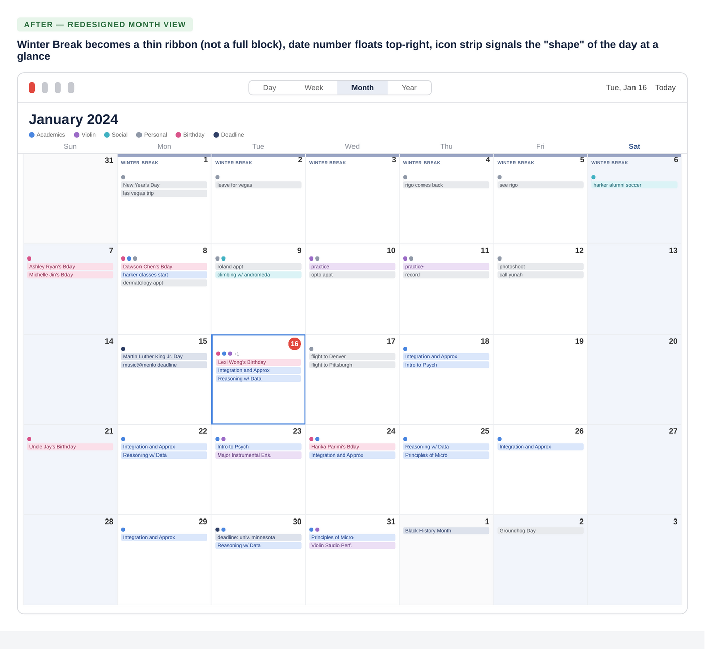

Apple Calendar's Week and Month views use a rigid, one-size-fits-all visual system that doesn't adapt to how differently people actually use their time — leaving power users with dense, overlapping schedules unable to compress dead time, differentiate event importance, or scan a busy month at a glance.
01 · Context
As a Systems Design and Violin Performance dual-degree student at Carnegie Mellon, my calendar is the only thing standing between me and a missed rehearsal, exam, or research deadline. In a given week I'm tracking five academic calendars, a research assistantship, orchestra rehearsals and performances, event-planning commitments, exercise, and a social life — twelve separate calendars layered into one app.
Apple Calendar (iCal) is where all of it lives. It works, but over a semester of near-constant use, the same friction kept resurfacing: dead space that couldn't be compressed, a color system too rigid to reflect how I actually organize my life, and views that gave a week-long school break the same visual weight as a 30-minute meeting.
Rather than switch tools, I treated my own calendar as a research subject.
02 · Problem Statement
03 · Research Approach
Instead of running interviews or surveys after the fact, I used an autoethnographic diary-study method: over several weeks of real use, I annotated live screenshots of my own calendar the moment something didn't work, using on-device markup to circle, label, and sketch fixes directly on top of my actual schedule. Capturing friction in the moment — rather than relying on recalled pain points in a later interview — surfaced complaints I wouldn't have thought to mention if simply asked "what's wrong with your calendar app?"
Research artifacts:
- Week View screenshot, annotated live (November 2023)
- Month View screenshot, annotated live (January 2024)
- Calendar sidebar screenshot showing all 12 active calendars (January 2024)
04 · Key Findings
No visual hierarchy within a single calendar
Every event in a given calendar renders in the same flat color with no bold, italic, or pattern options. To make one deadline stand out from a routine event, the only option is creating an entirely new calendar — overkill for a single event.
Let users apply text weight (bold/italic) or a fill pattern to individual events, without requiring a new calendar.
Rigid, one-note color palette
Calendars support only a single solid preset color, with no gradients, patterns, or background tinting. The visual language defaults to a white/black/red theme that not every user wants.
Expand the color picker beyond preset dots to include custom hues, subtle patterns, and calendar-level background tints.
Dead time can't be collapsed
Roughly seven hours every night (sleep) render at the same height as waking hours, pushing the real schedule below the fold in Week view for no reason — nothing is ever scheduled there.
Let users compress ("warp") a defined empty time range, with the collapsed window customizable per user rather than fixed.
The "now" indicator is easy to lose
Across every view type, the current-time marker blends into a dense grid of overlapping events and colors, making "what's happening right now" harder to answer at a glance than it should be.
A persistent, higher-contrast "now" marker in every view type, with a floating time chip when the current time is scrolled out of frame.
Inconsistent weekend treatment
Month view subtly shades weekends as a visual anchor; Week view doesn't carry the same treatment, removing a small but genuinely useful wayfinding cue.
Carry weekend shading into every view, and expose it as a toggle in Settings for users who'd rather turn it off.
Multi-day banners compete with real events
A week-long banner like "Winter Break" renders at the same visual weight as a 9am lecture, cluttering the grid with context that isn't a "commitment" the way a scheduled meeting is.
Give banner/all-day events a lighter, background treatment — a thin strip or watermark rather than a full-weight bar — so single-instance events stay the visual focus.
Date numbers crowd event labels
Because the day-of-month number sits inline with the first event of the day, longer event labels get squeezed and truncated unnecessarily.
Let the date number float independently (e.g., top-right corner of the cell) so event text has full width beneath it.
No at-a-glance category signal
On a day with five or more events, there's no way to tell — without tapping in — what kind of day it is: exam-heavy, music-heavy, social. Every day cell looks equally dense.
A small row of category icons beneath the date number, color- and icon-coded to each calendar, so a glance at the month grid reveals the shape of the month — with tap-to-expand for the full day list.
No seasonal or ambient cues
The month grid looks identical whether it's a frozen January or a sunny June, which makes the calendar feel more clinical than it needs to.
Small, optional seasonal iconography (e.g. a snowflake in January, a bloom in March) as a low-cost way to add warmth without adding clutter.
Twelve calendars, one visual language
Every calendar in the sidebar — Birthdays, Family, Social/Home, Exercise, Violin, CMU Public, Exams, US Holidays, Siri Suggestions, and more — is differentiated only by a small colored dot next to an identical list row. There's no iconography, no grouping, and no way to separate calendars I check daily from ones I rarely touch.
Add lightweight icons per calendar type, let users create custom folders/groups (e.g. "School," "Personal," "Subscribed"), and support pinning or reordering the calendars used most.
04.5 · Redesign Comparison
Turning the highest-priority findings into an actual side-by-side comparison, using the same real schedule from the diary study.

Flat color hierarchy, no weekend shading, dead sleep hours eat the grid, "now" line easy to miss.

Sleep hours collapse to reclaim space, weekend shading, bold/italic hierarchy, high-contrast "now" marker.

Multi-day banner has full weight of a real event, date number crowds text, no way to tell a day's "shape" at a glance.

Winter Break becomes a thin ribbon (not a full block), date number floats top-right, icon strip signals the "shape" of the day at a glance.
05 · Prioritization
Plotting the ten findings against rough implementation effort helps sequence a roadmap — small, high-leverage fixes first, with the more structural changes staged for later.
High Impact · Low Effort
- Weekend shading in every view (#5)
- Higher-contrast "now" indicator (#4)
- Bold / italic text on events (#1)
- Floating date number in Month view (#7)
High Impact · High Effort
- Collapsible / "warped" dead time (#3)
- Category icon strip in Month view (#8)
- Lightweight banner treatment for multi-day events (#6)
Lower Impact · Low Effort
- Seasonal iconography (#9)
Lower Impact · High Effort
- Full sidebar restructuring with custom folders (#10)
- Expanded color/pattern system (#2)
06 · Reflection & Next Steps
This was a solo, single-subject diary study — real, in-the-moment friction, but an n of 1. My own habits (heavy color-coding, 12 overlapping calendars, a packed academic schedule) shape which pain points surfaced; someone with a lighter calendar might prioritize differently.
With more time, I'd take this in three directions: run the same live-annotation exercise with 5–8 other students with different calendar habits to see which findings generalize beyond my own use; build clickable Figma prototypes for the "high impact / low effort" quadrant and usability-test them against the current iCal flows; and validate the category-icon-strip concept specifically — the most speculative finding here — with a first-click or card-sort test, since it changes the Month view's information density the most.
07 · Appendix — Research Artifacts
Raw, in-the-moment annotations made directly on live screenshots during actual weeks of use.


This case study was produced independently as a personal design exercise and is not affiliated with or endorsed by Apple Inc.